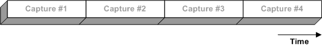
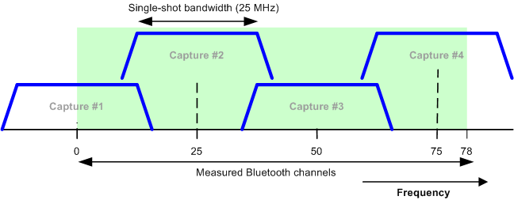

According to the test specification, the ACP measurement must cover all Bluetooth/LE channels, i.e. a frequency band of at least 80 MHz. To achieve this range, the received signal is captured multiple times at different receive frequencies.

The measurement bandwidth for each single shot capture is 25 MHz. To cover all channels, a minimum of four captures is required.

- The first capture (capture #1) is centered on the selected transmit channel ("RF Settings > Frequency/Channel ..."). It is triggered by the rising slope of the first measured burst. This burst provides the power, modulation, and 20 dB bandwidth results.
- The center frequency of the following captures is selected such that the regulatory range is covered. Depending on the position of capture #1, either four or five captures are required in total. The multi-shot ACP results "Ptx" are combined from all captures.
For ACP measurements on BR packets (test purposes TP/TRM/CA/BV-06-C), the RF specification stipulates 10 spectrum analyzer sweeps, each with a 100 ms sweep time. The measurement is to be performed in loopback mode, where the EUT transmits in every second packet interval. These results in an effective measurement time of 10 * 100 ms / 2 = 500 ms.
To obtain an effective measurement time of 500 ms, the statistic count ("Measurement Control > Spectrum > ACP Statistic Count") has to be set to the number of measured packets:
Packet type | ACP statistic count |
|---|---|
DH1 | 500 ms / 0.625 ms = 800 |
DH3 | 500 ms / (3 * 0.625 ms) ≅ 267 |
DH5 | 500 ms / (5 * 0.625 ms) = 160 |
For ACP (in-band spurious emissions) measurements on EDR packets (test purpose TP/TRM/CA/BV-13-C), the RF specification stipulates 10 sweeps, each with a sweep time of 1 packet length. To measure in accordance with the specification, select "Gated ACP Statistic Count: 10", irrespective of the measured packet type.
The ACP (in-band emission) measurements on LE packets are defined in the test purposes TP/TRM-LE/CA/BV-03-C for LE 1M PHY and TP/TRM-LE/CA/BV-08-C for LE 2M PHY. The RF test specification stipulates 10 spectrum analyzer sweeps per half-channel (1 MHz), each with an RBW of 100 kHz and with a 100 ms sweep time. The measurement is to be performed in direct test mode, where the EUT transmits a packet with either 37 or 255 payload bytes.
The LE 1M PHY measurement provides 100 ms sweep time result in a measurement time of 200 µs per frequency point for a typical 500 pixel digital spectrum analyzer output. So, the effective measurement time per PTX,i is 10 * 200 µs = 2 ms for LE 1M PHY. For LE 2M PHY, the effective measurement time per PTX,i is also 2 ms.
- Settings for LE 1M PHY:
– For the payload length of 37 bytes, set the statistic count to 2 ms / 376 µs ≅ 6 – For the payload length of 255 bytes, set the statistic count to 2 ms / 2120 µs ≅ 1 - Settings for LE 2M PHY:
– For the payload length of 37 bytes, set the statistic count to 2 ms / 376 µs ≅ 6 – For the payload length of 255 bytes, set the statistic count to 2 ms / 1064 µs ≅ 1 - Tests for LE coded PHY are not specified in the test specification for Bluetooth wireless technology RF-PHY, version 5.0.0.